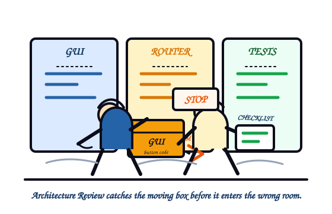
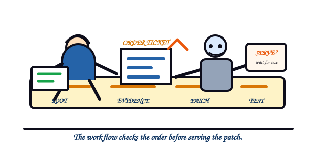
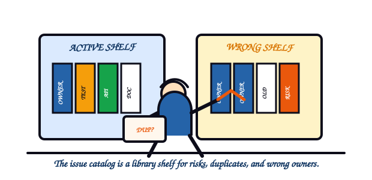
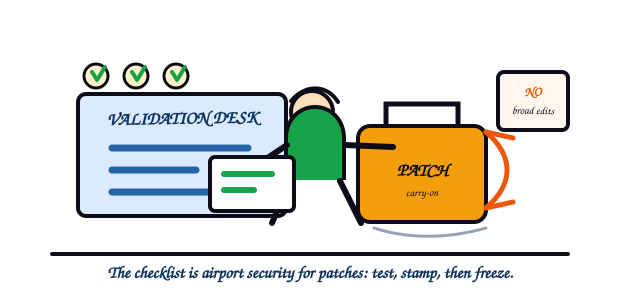

KANDA Reasoner Help - Tab 1
01Architecture Review
A local, evidence-backed safety lens for finding architecture risks before a human or AI edits the wrong part of the project.

What Problem This Solves
Technical: Architecture Review reads project structure, import evidence, symbol ownership, boundary metadata, test links, and generated artifact contracts. It turns that evidence into named issue families that can be validated before any patch is accepted.
In plain English: The tool is a map reader. It helps you see when the project has two roads with the same name, a file living in the wrong neighborhood, or a test that protects the wrong thing.

Workflow

- Open Architecture Review from the KANDA Reasoner desktop GUI.
- Confirm the active project root and worker script.
- Run the architecture review and inspect the issue families.
- Use the evidence paths and issue codes to find the responsible owner box.
- Patch narrowly, validate locally, and freeze only after clean evidence exists.
Authority boundary. Architecture Review reports risks. It does not change files, approve patches, select prompts, freeze features, or override routing logic.
Fast Reading Table
| Issue | What It Means | Why It Matters |
|---|---|---|
| Duplicate public symbols | Two or more files define or export the same public name. | The wrong file can be imported, edited, or trusted. |
| Symbol shadowing | A local name hides another name with the same spelling. | Code may call a variable or helper different from the intended one. |
| Wrong owner box | Code lives in the wrong part of the system. | Future fixes may land outside the true owner boundary. |
| Cross-box boundary violations | One app area reaches directly into another area it should not control. | Boxes become tightly coupled and fragile. |
| Circular imports | Two modules depend on each other in a loop. | Startup can fail or behave differently by import order. |
| Side effect on import | A module performs visible work just by being imported. | Inspection can unexpectedly write files, launch tools, or mutate state. |
| Mixed responsibility files | One file tries to own unrelated jobs. | The file becomes hard to reason about, test, and safely refactor. |
| Stale or deprecated variants | Old versions or backups still look active. | Human or AI repair may target a dead path. |
| Misplaced tests | A test exists but lives in the wrong place or tests the wrong target. | The project may look protected while active code is uncovered. |
| Test protection gap | Important active code has no meaningful test protection. | Critical behavior can break silently during later work. |
| Unsafe path and platform assumptions | Code assumes a path, OS, or encoding that may not hold. | The tool can work on one machine and fail on another. |
| Canonical vs working-copy boundary errors | The app confuses protected canonical data with local AI working copies. | Experiments can contaminate the source of truth. |
| Generated artifact contract errors | Generated files violate expected names, locations, or sections. | Downstream tools may consume incomplete or stale output. |
| Public API instability | A public function, class, or export changes without compatibility planning. | Other callers may still use the old public surface. |
| Dead code and unreachable files | Files or functions exist but nothing active uses them. | Noise increases and AI attention is wasted. |
| Inconsistent source of truth | Docs or code disagree about what is active. | Developers may follow stale instructions. |
| Test asserts internal detail | A test depends on private implementation details instead of public behavior. | Safe refactors look broken while real behavior bugs may be missed. |
| Import heaviness and slow startup risk | A lightweight path imports heavy modules too early. | Startup becomes slow, fragile, or dependent on optional packages. |
| Bundle safety issues | A delivered patch changes too much or lacks safe boundaries. | A small bug fix can become a broad accidental rewrite. |
| Project-wide AI confusion risks | Project layout makes AI likely to pick the wrong owner, symbol, or file. | AI help becomes less reliable even when files are syntactically valid. |
| Cross-box public symbol collision | Different boxes expose the same public name. | Import order can decide behavior instead of a clear owner contract. |
| Shared mutable state coupling | Multiple boxes quietly read and write the same mutable state. | A change in one box can silently affect another. |
| Inconsistent error contract at boundaries | One box raises, another swallows, and another returns unclear results. | Failures disappear or surface in the wrong place. |
| Tests assert implementation internals instead of public contracts | A test checks private details instead of what users or APIs observe. | Tests become brittle and miss user-visible failures. |
| Missing __all__ or uncontrolled public surface | A module does not clearly define its public names. | Private helpers can become accidental public API. |
Issue Family Details

1. Duplicate public symbols
Technical: Two or more files define or export the same public class, function, or constant. Check symbol_index, web_ai_symbol_index, primary_definition_index, and DUPLICATE_PUBLIC_SYMBOL.
In plain English: Two active files wear the same public name. A developer or AI can edit the old one and believe the app was fixed.
Further reading: architecture boundaries; Python public names.
2. Symbol shadowing
Technical: A local name hides another name with the same spelling. Check files, source_file_index, symbol_index, imports, and SYMBOL_SHADOWING.
In plain English: A new label is placed over an old label, so the code may call a variable when it meant to call an imported helper.
Further reading: Python import system; Python public names.
3. Wrong owner box
Technical: A file or symbol appears in a system box that should not own that responsibility. Check web_ai_file_responsibility_index, boundary_index, semantic_roles, and WRONG_OWNER_BOX.
In plain English: The right code exists, but it lives in the wrong drawer. Future fixes become guesses instead of owner-based repairs.
Further reading: architecture boundaries; secure design reviews.
4. Cross-box boundary violations
Technical: One box reaches through another box's private implementation instead of using a public contract. Check import_graph, call_edges, boundary_violation_index, and CROSS_BOX_BOUNDARY_VIOLATION.
In plain English: One area of the app is touching controls that belong to another area. A small fix can break a distant workflow.
Further reading: architecture boundaries; secure architecture.
5. Circular imports
Technical: Two or more modules import each other in a cycle. Check import_graph, module_summary_index, and CIRCULAR_IMPORT.
In plain English: File A waits for File B while File B waits for File A. Startup can fail depending on which file is loaded first.
Further reading: Python import system; architecture boundaries.
6. Side effect on import
Technical: A module performs visible work merely because it is imported. Check source_file_index, call_edges, entry_points_detail, and SIDE_EFFECT_ON_IMPORT.
In plain English: Looking at a file should not start the GUI, write files, launch tools, or mutate settings.
Further reading: Python import system; testing reliability.
7. Mixed responsibility files
Technical: One file owns unrelated roles, such as UI layout, persistence, prompt policy, and validation. Check web_ai_file_responsibility_index, semantic_roles, symbol_index, and MIXED_RESPONSIBILITY_FILE.
In plain English: The file has too many jobs. It becomes hard to test because nobody can say which behavior it owns.
Further reading: architecture boundaries; secure design reviews.
8. Stale or deprecated variants
Technical: Old versions, backup files, or deprecated variants still look active. Check canonical_conflict_index, legacy_shadow_hotspots, STALE_VARIANT_SOURCE_OF_TRUTH, and DEPRECATED_VARIANT_STILL_REFERENCED.
In plain English: The project has old signs still pointing to closed roads. AI can follow the stale sign and patch the wrong path.
Further reading: architecture boundaries; testing reliability.
9. Misplaced tests
Technical: A test exists but is stored in the wrong location or imports the wrong target. Check test_links, web_ai_test_protection_index, and MISPLACED_TEST.
In plain English: The project looks protected, but the test may be checking a retired file instead of active behavior.
Further reading: testing reliability; Python import system.
10. Test protection gap
Technical: Important active code has no direct or indirect test protection. Check web_ai_test_protection_index, test_links, and TEST_PROTECTION_GAP.
In plain English: A central behavior can break and nothing will complain until a user sees the failure.
Further reading: testing reliability; secure design reviews.
11. Unsafe path and platform assumptions
Technical: Code assumes a path style, operating system, working directory, or encoding that may not hold. Check collection_config, packaging_metadata, and UNSAFE_PATH_PLATFORM_ASSUMPTION.
In plain English: The tool may work on one machine and fail on another because the file path or platform rule was hardcoded.
Further reading: Python import system; secure design reviews.
12. Canonical vs working-copy boundary errors
Technical: The app confuses protected canonical JSON with local AI working-copy data. Check persistence_io_index, call_edges, and CANONICAL_WORKING_COPY_BOUNDARY.
In plain English: An experiment can accidentally write into the source of truth, turning a temporary AI note into official project data.
Further reading: secure design reviews; architecture boundaries.
13. Generated artifact contract errors
Technical: Generated files do not match required names, locations, sections, or manifests. Check route manifests, split manifests, and GENERATED_ARTIFACT_CONTRACT.
In plain English: A generated file may look present but be incomplete, stale, or shaped differently than downstream tools expect.
Further reading: testing reliability; secure design reviews.
14. Public API instability
Technical: A public function, class, or export changes without compatibility planning. Check __all__, symbol_index, call_edges, and PUBLIC_API_INSTABILITY.
In plain English: Other files may still call the old public name. Renaming a public door without signs breaks callers.
Further reading: Python public names; architecture boundaries.
15. Dead code and unreachable files
Technical: Files or functions exist but no active entry point, import, or call uses them. Check import_graph, call_edges, entry_points_detail, and DEAD_CODE_UNREACHABLE_FILE.
In plain English: Old machinery is still on the floor. It adds noise and can mislead future edits.
Further reading: Python import system; testing reliability.
16. Inconsistent source of truth
Technical: Documentation, code, or manifests disagree about what is active or correct. Check documentation intent, web_ai_file_responsibility_index, source_file_index, and STALE_VARIANT_SOURCE_OF_TRUTH.
In plain English: Two official-looking instructions disagree. A person or AI cannot know which one to trust without evidence.
Further reading: architecture boundaries; secure design reviews.
17. Test asserts internal detail
Technical: A test depends on private implementation details instead of public behavior. Check control_flow, runtime_trace_raw, and TEST_ASSERTS_INTERNAL_DETAIL.
In plain English: The test cares about how the app is built inside, not what the user or public API can observe.
Further reading: testing reliability; Python public names.
18. Import heaviness and slow startup risk
Technical: A lightweight path imports heavy modules, optional UI stacks, or slow dependencies too early. Check import_graph, module_centrality_index, and IMPORT_HEAVINESS_STARTUP.
In plain English: Opening a small drawer pulls in the whole workshop, making startup slow and fragile.
Further reading: Python import system; testing reliability.
19. Bundle safety issues
Technical: A delivered patch changes too much, lacks a manifest, or edits files outside the intended boundary. Check bundle manifest text, changed-file lists, and BUNDLE_SAFETY.
In plain English: A small fix arrives with extra unrelated edits. That makes review harder and regression risk higher.
Further reading: testing reliability; secure design reviews.
20. Project-wide AI confusion risks
Technical: Project structure makes AI likely to choose the wrong owner, symbol, or file. Check canonical_conflict_index, responsibility_overlap_index, primary_definition_index, and PROJECT_WIDE_AI_CONFUSION.
In plain English: The project contains too many convincing wrong answers, so AI help becomes less dependable.
Further reading: architecture boundaries; Python public names.
21. Cross-box public symbol collision
Technical: Different architecture boxes expose the same public name. Check symbol_index, boundary_index, web_ai_file_responsibility_index, and CROSS_BOX_PUBLIC_SYMBOL_COLLISION.
In plain English: Two boxes put the same label on different public doors. Import order can decide behavior instead of design.
Further reading: Python public names; architecture boundaries.
22. Shared mutable state coupling
Technical: Multiple boxes read and mutate the same runtime state without an explicit owner or adapter. Check attribute_state_map, object_ownership, state_mutation_index, and SHARED_MUTABLE_STATE_COUPLING.
In plain English: One area can quietly change the conditions another area depends on, so bugs appear far away from the edit.
Further reading: architecture boundaries; secure architecture.
23. Inconsistent error contract at boundaries
Technical: Boundary calls report failure in incompatible ways, such as raising, swallowing, or returning None. Check call_edges, control_flow, runtime_trace_raw, and BOUNDARY_ERROR_CONTRACT.
In plain English: One box shouts, another whispers, and another says nothing. Failures become hard to locate.
Further reading: secure design reviews; testing reliability.
24. Tests assert implementation internals instead of public contracts
Technical: A test checks private details instead of observable user behavior or public API behavior. Check test_links, source_file_index, symbol_index, and TEST_ASSERTS_INTERNAL_DETAIL.
In plain English: A safe refactor can break the test, while a real user-visible failure may pass unnoticed.
Further reading: testing reliability; Python public names.
25. Missing __all__ or uncontrolled public surface
Technical: A module exposes names without a clear public-surface contract. Check source_file_index, __all__, symbol_index, MISSING___ALL___FOR_EXPOSES, and MISSING_PUBLIC_SURFACE_CONTROL.
In plain English: Private helpers can look public. Other files may start depending on code that was never meant to be shared.
Further reading: Python public names; Python import system.
Operating rule. Use Architecture Review to find the owner and risk class. Then patch narrowly, validate, and freeze only after clean evidence exists.
Further Reading Map
Architecture boundaries: Martin Fowler, Software Architecture Guide, used for the idea that architecture is shared system understanding and component organization.
Python import system: Python language reference, The import system, used for import search, module creation, and name binding behavior.
Python public names: Python language reference, Simple statements, used for __all__ and public-name rules.
Testing reliability: Google SRE, Testing for Reliability, used for test coverage as evidence that reduces change uncertainty.
Secure design reviews: OWASP Secure by Design Framework, used for design-time review, trust boundaries, and evidence-based design checks.
Secure architecture: OWASP SAMM Secure Architecture, used for architecture design attention to components, supporting technologies, and security properties.
Operational Checklist

- Confirm the project root and source label before loading the tool.
- Read the issue code and evidence before deciding what owns the fix.
- Do not treat an issue report as permission for broad refactoring.
- Run focused tests after any architecture repair.
- Freeze only after validation evidence is clean and current.